← 返回阅读库 · 原论文目录
论文讲解阅读文档 · 机器人学 · v117
SEER Stored Embeddings for Efficient RL[2103.02886]
视频时长 00:07:47；讲解文字 3,577 字符；提取讲解画面 13 张。按视频原顺序阅读，每段文字保留时间戳。
文字来自整段视频的自动语音转写，按自然停顿分段，并与 PPT / 论文页面 / 演示画面对齐。未将讲解压缩为摘要；术语、数字和口述公式请结合画面及原论文核对。 阅读稿已校正规范部分明确术语误识别；原始逐字稿和每处修改记录另行保留。
讲解画面为源视频截图（640×360），不是可编辑 PPT 文件。全片按每秒 2 帧扫描内容变化，逐步展开页保留；连续动画保留代表画面。清晰度受源视频限制。
下载完整资料包 · 含离线 HTML、PDF、Word、全部 PPT 画面和字幕。
原论文与材料
Improving Computational Efficiency in Visual Reinforcement Learning via Stored Embeddings · 下载完整 PDF（21 页）
按时间阅读
00:00:00–00:00:01 · 画面 001
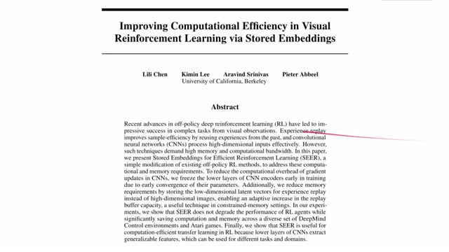
00:00:00–00:00:01 · 画面 00100:00:01–00:01:01 · 画面 002
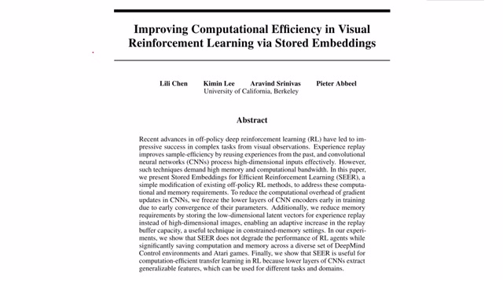
00:00:01–00:01:01 · 画面 002大家好，今天我们迅速写一篇论文，叫做 Improving Computational Efficiency in Visual Reinforcement Learning via Stored Embeddings。那么这篇论文的出发点其实非常简单，就是我们在训练一个 CNN based 的这个 policy 的时候，那么前面的几层 CNN encoder 它是会提前就 converge 的。也就是说，后面虽然我们在学习不同的 policy 学得很辛苦，但是前面的 encoder 基本是不会怎么变化的。
那么如果我的 encoder 不需要怎么变呢？那我干脆就在训练好了之后把前面的 encoder 锁死。这样子呢，它对应的 latent representation 也就锁死了。最后呢，我们只要从 latent representation 直接学一个好的 policy 就可以。那么这篇文章作者的方法叫做 Stored Embeddings for Efficient Reinforcement Learning，简称 SEER。那么它跟之前的那个 Facebook 提出的 self-supervised 大规模的那个 SEER 它不是一个东西，大家记得做好区分。那么在今天的视频中呢，我们首先快速的梳理一下作者 intuition，其实也就是我们刚刚说的作者为什么他会提出这样一个方法。然后呢，会介绍一下本文提出方法的具体细节，以及最后作者汇报的实验内容。
00:01:01–00:01:15 · 画面 003
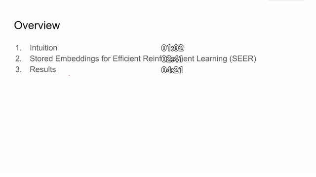
00:01:01–00:01:15 · 画面 00300:01:15–00:01:16 · 画面 004
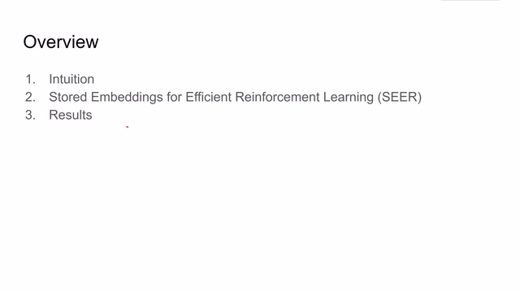
00:01:15–00:01:16 · 画面 00400:01:16–00:02:41 · 画面 005
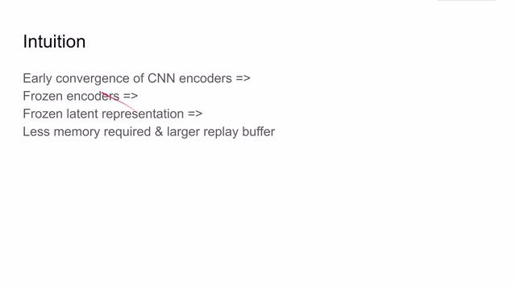
00:01:16–00:02:41 · 画面 005那么正如我们开头所说的一个 policy 它经常就是前面几层 CNN convolutional layers 然后加后面几层 MLP 来组成一个 policy 最后来比如说到 qlearning 或者是 actor-critic 这样的 reinforcement learning 的算法那么作者在实践的过程中发现前面的几层 CNN encoders 它是可能很早就收敛了虽然我们在不断训练后面的 policy 那么既然前面的 encoder 已经收敛了我们就不用再训练它了吗
那么于是呢，我们就把前面的 encoders 给它冻住。冻住这个 encoders 之后呢，我们的每一张对应的图像输入进来，它就可以固定的对应到 latent space 中的一个 representation。所以说，我们对应的 latent representation 呢也就锁定住了。那么这样子，我们只需要训练从 latent representation 到最后的 policy 到最后的 qvalue 这中间的这个网络那就可以了。
这样带来一个好处就是，我的 replay buffer 中再也不用塞原来的那些原始图像了。我只要把这个 latent representation 塞进去就好了。那么 latent representation 相对于原始图像，它占的内存是非常少的。那这也就意味着，我们在相同的内存中塞一个更大的 replay buffer。那么作者的实验也证明，我们把这个 encoder 冻住之后可以使用更大的 replay buffer。这样子呢，这样性能的表现会有所提升，或者我们限制 replay buffer 的大小。
但是 replay buffer 所占的内存会大大的降低。那么具体来看，本人提出的方法其实也没有什么特别复杂的技术细节，就是一开始的时候我们就正常训练，比如这里是用了一个 encoder 把图像变成 latent representation，然后送到 actor-critic 里面来训练一个 policy。那么训练了一段时间之后，我们发现前面的 encoder 它已经基本收敛了。好，那么这个时候我就把 encoder 冻住，我就不再更新 encoder 了。
00:02:41–00:04:21 · 画面 006
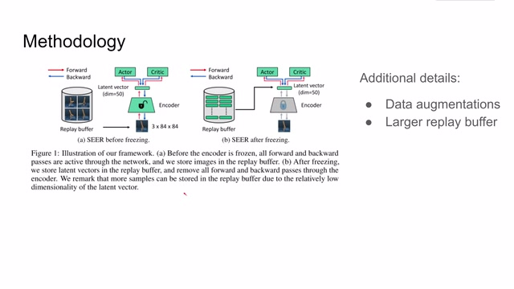
00:02:41–00:04:21 · 画面 006那么唯一再训练的部分就是从 Latent RepresentationLatent Vector 到 Actor Critic 这个过程。那么我们的 Replay Buffer 里面也可以全部都替换成 Latent Vector。因为这个 Latent Vector 比如说这里是一个长度为 50 的 Latent Vector。它比原来 84x84 甚至 100x100 的这个图像它占的内存要小很多。所以我们的 Replay Buffer 里面可以塞更多的样本那么除去这些核心的实现之后呢，作者还提出了说 data augmentation 数据增强对我们后面的 policy learning 是有帮助的。那么原来我们对 playbuffer 里面存的是原始图像的时候，我们可以对这个一个 if 图像来使用不同的图像增强的策略来训练整个 network。那现在我们的 encoder 固定了 if 图像增强之后呢，又会得到很多个 latent vector
那么作者的思路就是把这些 latent vector 也都存到 replay buffer 里面，然后标记好它们是来自同一个样本的。那么即便如此，这样存下来的 latent vector 所占的内存还是要比整个存一张原始的大图要占的小很多。同时你也可以享受到跟原来一样的 data augmentation 带来的好处
00:04:21–00:05:22 · 画面 007
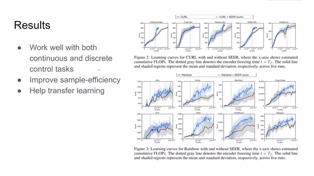
00:04:21–00:05:22 · 画面 007好了，我们看到结果这里作者进行了充分的实验，分别在连续控制空间和离散控制空间。连续控制空间就是 DeepMind 的 DMC，就是 DeepMind Control DMC。那么离散控制空间就是我们熟悉的雅达利环境。可以看到作者使用了 CURL baseline，我们之前也有一个视频专门介绍 CURL 这个方法，有不熟悉的朋友可以去翻看前面的视频。那么作者发现在 baseline 上加上我们本文提出的 SEER 这个方法在相同计算量的时候性能是有所提升的，至少说它是不下降的。那么同样在离散的控制空间，作者使用的 Rainbow 作为 Baseline。那么 Rainbow 加上本文提出的方法也是在相同计算量的时候性能有提升，至少是不下降的。那么所以说本文提出的方法在连续控制空间和离散的控制空间上都可以 work
然后再看 sample efficiency 和 memory efficiency 的事情。那么这里作者汇报了这个是在相同计算量的条件下，使用了 SEER 得到的分数比 baseline 都要高一些。那么在使用了相同的 environment steps，这也就是衡量 data efficiency 的情况下，那么使用了 SEER 在绝大多数情况下都比原来的 baseline 要高那么一些。那么此外这里作者还测试了我限制 memory 的大小
00:05:22–00:06:31 · 画面 008
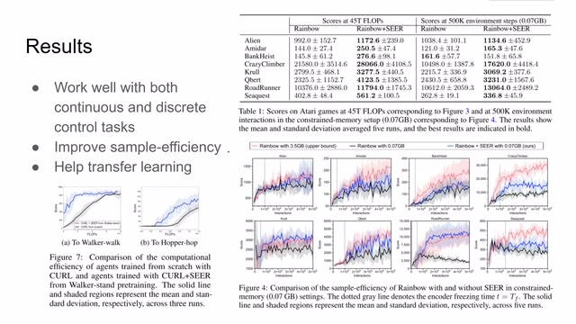
00:05:22–00:06:31 · 画面 008那么显然在相同的内存条件下，我们提出的方法是能够改善或者至少说不下降 Baseline 的性能的。那么最后作者还测试了 Transfer Learning，我前面既然已经学到一个好的 Encoder 了，我比如说我是针对一个任务来学的 Encoder，那我能不能把这个任务把这个 Encoder 应用到其他的任务上去呢？那答案是肯定了。这里作者使用了 CURL对吧，使用 Walker-stand 这个 Walker-stand 这个任务呢做这个 pretraining，然后呢把训练好的这个 encoder 送到这两个新环境中。那么显然在相同的计算量的情况下，因为有了 pretraining，那么本文提出的方法效果是非常好的。那么最后呢作者说，那么最后呢作者为了验证本文的这个假设，也就是说 encoder 先训练好，后面的 policy 包括 qqvalue 是后训练好的，那么作者呢在这里做了 similarity 的这个
00:06:31–00:06:42 · 画面 009
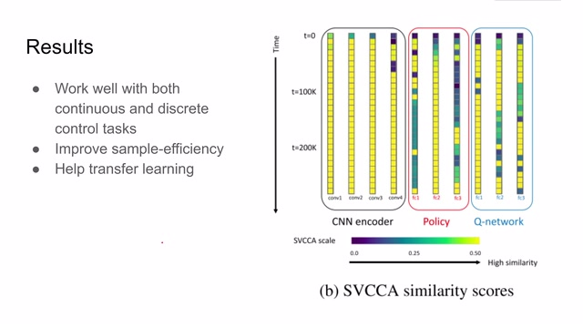
00:06:31–00:06:42 · 画面 00900:06:42–00:06:46 · 画面 010
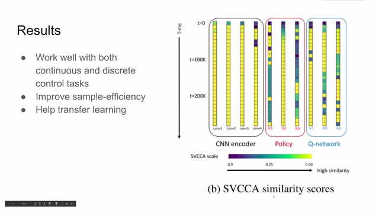
00:06:42–00:06:46 · 画面 010对比。那么第一行呢是 t 等于 0 的时刻，也就是随着 t 的增加，每一个 layer 它相对于 t 等于 0 的时候它的 similarity。可以看到呢这边没过多少步，这个前面的 CNN encoder 就基本就确定了。等到 t 等于 100k 的时候呢
00:06:46–00:06:47 · 画面 011
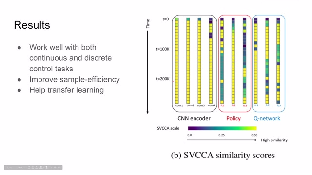
00:06:46–00:06:47 · 画面 01100:06:47–00:07:47 · 画面 012
00:06:47–00:07:47 · 画面 012基本上前面的 encoder 就不会有特别大的更新了，而我们的后面的 policy 或者是 qnetwork 他们会在持续的进行更新，所以说本文提出的假设说 CNN encoder 会提前收敛，实验结果也是能够支持作者的假设。那么总的来说，这篇文章的思想非常简单，里面用到的内容真的不复杂，从结果上来看效果是非常明显的。
那么可能在未来，这就是 image-based reinforcement learning 它一个常规的操作。好的，以上就是我对这篇论文的简单的分析，这也是一篇非常简单的论文，但是它效果真的非常好。那么感谢您的收看，再见。
00:07:47–00:07:47 · 画面 013
00:07:47–00:07:47 · 画面 013转写与来源说明 · 0 个自动复核提示
保留 18 个原始语音片段，0 个片段触发自动复核提示。提示仅用于定位可能的术语、重复或识别问题，不等于已确认错误。
讲解画面为源视频截图（640×360），不是可编辑 PPT 文件。全片按每秒 2 帧扫描内容变化，逐步展开页保留；连续动画保留代表画面。清晰度受源视频限制。
原视频：paper/合集_2026-10-16_机器人学/[论文简析]SEER Stored Embeddings for Efficient RL[2103.02886].mp4
SHA-256：b33693c3a5870ee38e0d789042bf06c67d34c8445df7212044e4d04955325880
全文按视频语音与画面制作。原论文可从上方链接下载；完整资料包保留全文、原始逐字稿、字幕和校对记录。